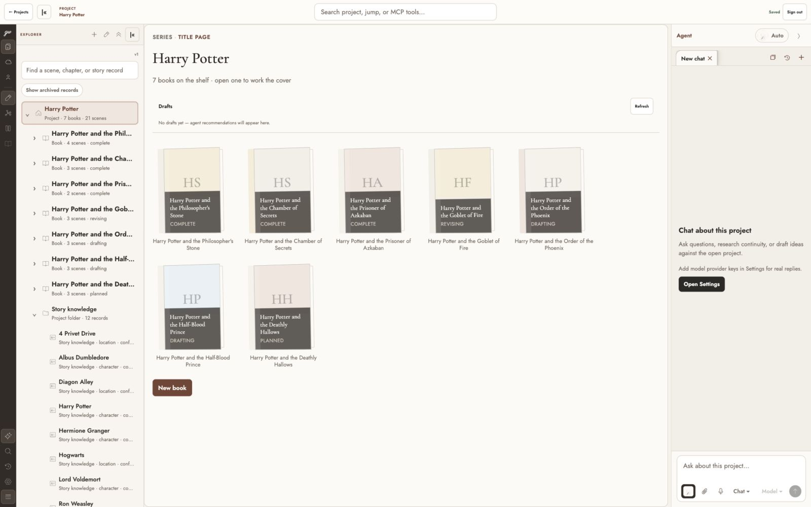
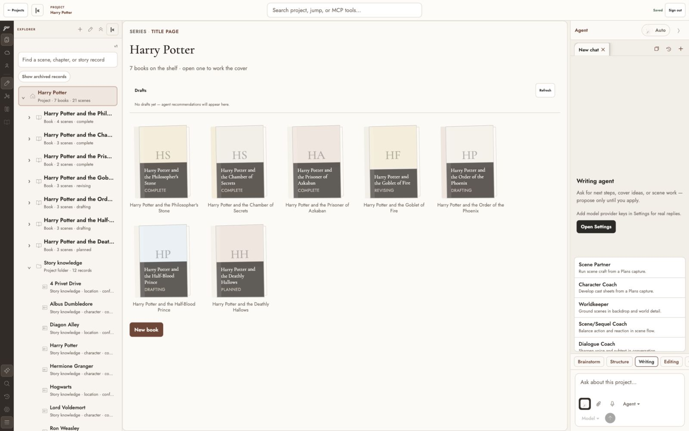
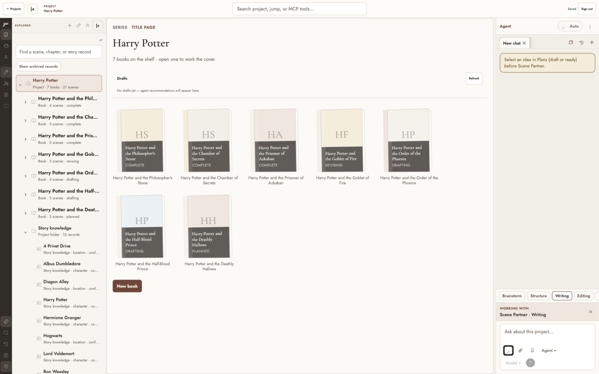
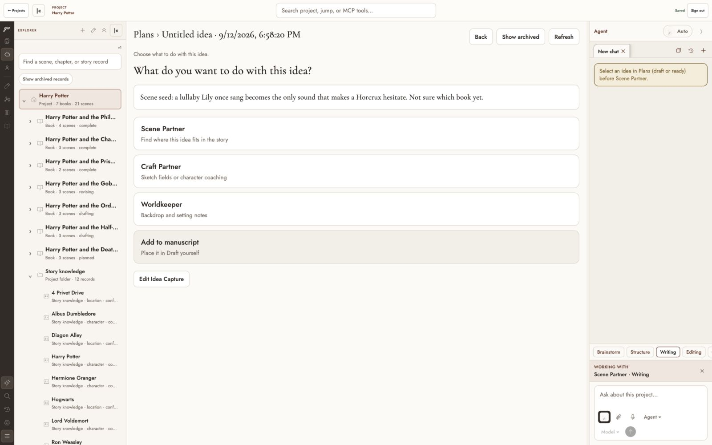

Product Design · current-state review
Connect the work, the draft, and the story
2026-09-12 · Epic plan
Brief and evidence limits
Extend the existing Ghostwriter Agent panel so the writer can develop a character, outline, chapter, or scene and carry the result through review, apply, and a separate coherence check. Reuse existing surfaces and design tokens. This is a workflow plan, not a new UI build or selected visual mockup.
Captured in Codex in-app Browser at 1600×1000 using the isolated PGlite demo, http://localhost:8081. Local live database startup failed because its endpoint is disabled. No live provider keys are configured in this demo. Generation, approval/apply, provider quality, reload durability, and full keyboard/screen-reader compliance were not verified here. The four steps below are the observed entry/handoff path, not a completed story-writing audit.
1 · Open the project and Agent
Partial: recognizable shell, but no task-specific starting point. Project drafts and the Agent are visible together. The no-provider message is honest. The panel starts with generic chat rather than an outcome and destination. At the initial 1126×678 viewport, Agent was marked selected in accessibility state but the pane was not visible; the epic needs an explicit reachable narrow task route.

2 · Choose Agent → Writing
Partial: useful specialties, category-first discovery. Scene Partner, Character Coach, Worldkeeper and other specialists are available. A writer must infer which specialist and prerequisite fit their goal. The compact popup is scrollable and some items fall outside its initial view. Verify keyboard menu roles, focus, clipping and touch targets during implementation.

3 · Start Scene Partner without a Capture
Refusal works; recovery is indirect. The panel correctly says to select an idea in Plans. It also shows “Working with Scene Partner,” although no draft has been generated. A direct Create brief / Choose existing idea action would close this gap. Verify the refusal is announced, and distinguish selected specialist from running work.

4 · Open Plans and select an idea
Usable destination; assignment continuity is unclear. Plans shows the source text and explicit Scene Partner, Craft Partner, Worldkeeper, and Add to manuscript actions; Agent stays open. The previous missing-idea message remains visible after selection. Timestamp-based titles make intent harder to recognize. The new task should carry its brief, target, progress, and return path here.

Review update: connect Canvas and writing
Thomas’s review identified maintaining a cohesive story spine as a more fundamental need than agent task routing. The revised connected story spine contract makes Canvas↔Draft, shared scene intent, ordered thread tracing, and reconciling changed prose the first delivery slice. The screenshots above document the earlier observed flow only. This addition is proposed behavior.
Next visual review should show one scene in its chapter Canvas, that scene in Draft with story context, and the review of a changed outcome that affects later scenes. Keep the current product chrome; no living mockup file is replaced.
Proposed interaction direction
Task first, existing studio second. The panel begins with a concise work-type/target summary and editable brief. The current job strip becomes a reliable work summary with named artifacts, actual states, and Review/Open actions. Center surfaces keep their domain-specific editors. Results link back to the assignment. A review action opens the actual artifact and destination without replacing Agent with Inspector.
For example: “Scene · Lighthouse arrival · Chapter 1” → Develop draft → Review 1 scene + optional Canvas card → Create scene → Check continuity of the applied revision → Resolve finding. A chapter task previews structure rather than pretending a memo is a chapter. A plan can remain a plan indefinitely.
Before product UI coding, review a focused visual of task entry, artifact review, and narrow return behavior against these screenshots. No new design system or living-design rewrite is proposed.
Code-grounded gaps (separate from screenshots)
apps/client/src/work-plan-orchestrator.ts: catalog calls omit job instruction; Scene Partner resolves to a Capture ID, then job “done.”apps/backend/src/catalog-agent-routes.tsandpackages/core/src/catalog-agent-services.ts: no assignment brief contract; context mostly titles/IDs; deterministic fallback can be ready.apps/backend/src/workspace-chat-tools.ts: navigator, capped scene reads, Capture summaries, propose_work_plan; no full story-development tool chain.apps/mcp/src/server.tsandgrant-tools.ts: fixture navigator and granted Capture reflection, not complete story parity.packages/core/src/agent-proposal-apply-services.ts: reuse exact hash/version guards and human apply; do not bypass through transports.packages/core/src/work-plan-v1.ts,work-plan-execution.ts, ADR 0016: four job kinds, eight-job bound, fixed waves and client-driven execution.